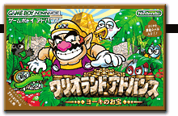
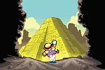
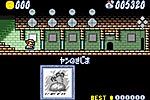
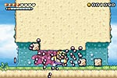
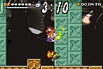
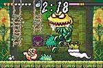

|  | ||||
『ワリオランド アドバンス ヨーキのお宝』 ８月21日発売 希望小売価格：4,800円（税別） ジャンル：アクション | ||||
■マリオの積年のライバルにして屈指のワイルドキャラクター、ワリオ。そんなワリオが、アドバンスに登場です。もう携帯ゲームでは定番になっているから、安心して遊べますよね。舞台がアドバンスにグレードアップしても、画面せましと動き回るワリオ。今回もお宝求めて謎の眠るピラミッドに潜入します。 ■ピラミッドの中にはいくつも通路があって、それぞれに、複数の冒険エリアが含まれています。コースをクリアするには、各エリアで１つずつ宝石を集めなければいけないんです。通路の壁にかけてある不思議な絵。その絵にすいこまれて、ワリオの冒険が始まります。 ■わー、絵がきれい！っていうのが最初の印象。さすがアドバンスです。細かい部分が描きこまれていて、すごく楽しいですね。ピラミッドの中はどこか別の世界につながっていたみたいで、水の中に潜ったり、とてもきれいな草原を歩いたり。ワリオのバカ力（？）で、次々とトラップをクリアしていきます。今回はＢＧＭもなかなかこっています。歌が流れるところもあって、ビックリです。もちろん、ワリオもしゃべりますよ。 ■さて、宝石を見つけたらスイッチを押して、制限時間内にエリアから出なければなりません。出入口は１つしかないから、もときた道を戻らなくちゃいけないんです。猛ダッシュで入口まで突っ走ります。これはスリルがありますね。ワリオは死なないキャラクターですが、ここで制限時間を過ぎてしまうと、そのコースでゲットしたアイテムは全部なくなってしまうんです。私みたいなそそっかしいプレイヤーは、欲ばらずにさっさと帰ったほうがいいですね〜。コインを集めれば制限時間がのびるから、コイン集めも重要です。 ■ミニゲームや中ボス戦も楽しい！ ディズニーランドみたいにいっぱい要素が入っていて、これはぜいたくなゲームですね。スイッチを押すまでは探索を楽しむアクションゲーム。押してからはスピードアクション、と１粒で２度おいしい！（古い？） 家族でアイテムや隠しトビラの情報を交換しあいながらプレイするのもイイんじゃないかな？ |
||||
|
|